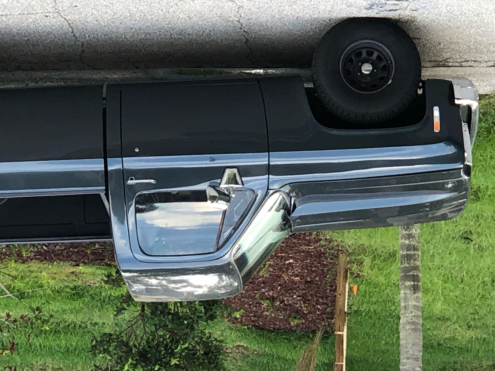
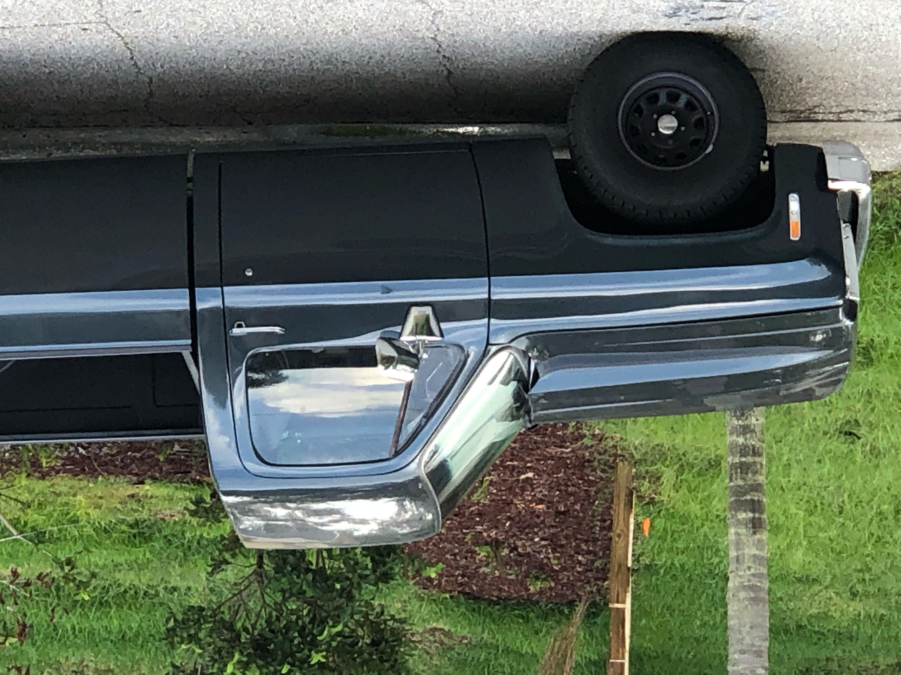

I've been working on my 1973 Chevrolet C10 for about a good 3 years now, and everything I learned along the way is just so fascinating. When I started this project, I could tell you very little about cars and how they work. Now, let's just say I know my way around an engine.
It all started when my good friend brought it home for the first time. One day, I knew that truck was going to be mine. She wasn't in the best of condition when I got her, but through trial and error, blood, sweat and tears, I've:
And after all of that, I'm just getting started.